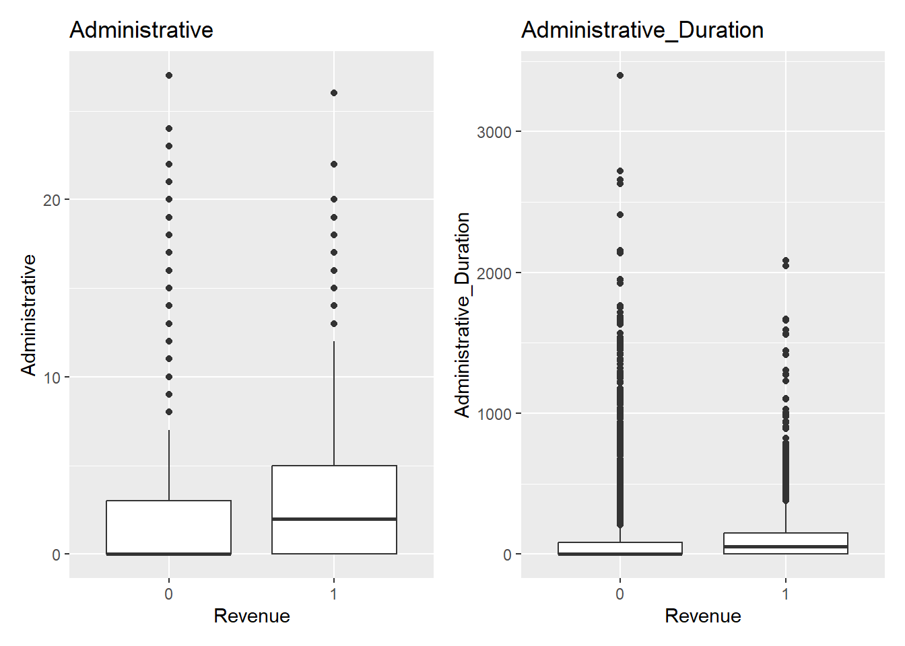
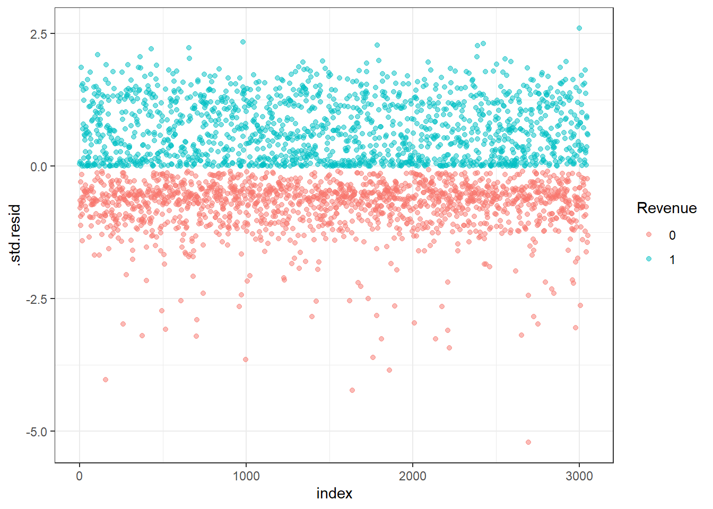

#install.packages('DescTools', 'caret', 'broom')
pacman::p_load(MASS, randomForestSRC, tidyverse, e1071, here, readxl, skimr, corrplot, patchwork)
rawdf <- read.csv(here('applications-final-project', 'online_shoppers_intention.csv'))Final Project Sandbox
Data Description
Data Source
Data Dictionary The dataset consists of 10 numerical and 8 categorical attributes. The ‘Revenue’ attribute can be used as the class label.
“Administrative”, “Administrative Duration”, “Informational”, “Informational Duration”, “Product Related” and “Product Related Duration” represent the number of different types of pages visited by the visitor in that session and total time spent in each of these page categories. The values of these features are derived from the URL information of the pages visited by the user and updated in real time when a user takes an action, e.g. moving from one page to another. The “Bounce Rate”, “Exit Rate” and “Page Value” features represent the metrics measured by “Google Analytics” for each page in the e-commerce site. The value of “Bounce Rate” feature for a web page refers to the percentage of visitors who enter the site from that page and then leave (“bounce”) without triggering any other requests to the analytics server during that session. The value of “Exit Rate” feature for a specific web page is calculated as for all pageviews to the page, the percentage that were the last in the session. The “Page Value” feature represents the average value for a web page that a user visited before completing an e-commerce transaction. The “Special Day” feature indicates the closeness of the site visiting time to a specific special day (e.g. Mother’s Day, Valentine’s Day) in which the sessions are more likely to be finalized with transaction. The value of this attribute is determined by considering the dynamics of e-commerce such as the duration between the order date and delivery date. For example, for Valentine’s day, this value takes a nonzero value between February 2 and February 12, zero before and after this date unless it is close to another special day, and its maximum value of 1 on February 8. The dataset also includes operating system, browser, region, traffic type, visitor type as returning or new visitor, a Boolean value indicating whether the date of the visit is weekend, and month of the year.
summary(rawdf) Administrative Administrative_Duration Informational
Min. : 0.000 Min. : 0.00 Min. : 0.0000
1st Qu.: 0.000 1st Qu.: 0.00 1st Qu.: 0.0000
Median : 1.000 Median : 7.50 Median : 0.0000
Mean : 2.315 Mean : 80.82 Mean : 0.5036
3rd Qu.: 4.000 3rd Qu.: 93.26 3rd Qu.: 0.0000
Max. :27.000 Max. :3398.75 Max. :24.0000
Informational_Duration ProductRelated ProductRelated_Duration
Min. : 0.00 Min. : 0.00 Min. : 0.0
1st Qu.: 0.00 1st Qu.: 7.00 1st Qu.: 184.1
Median : 0.00 Median : 18.00 Median : 598.9
Mean : 34.47 Mean : 31.73 Mean : 1194.8
3rd Qu.: 0.00 3rd Qu.: 38.00 3rd Qu.: 1464.2
Max. :2549.38 Max. :705.00 Max. :63973.5
BounceRates ExitRates PageValues SpecialDay
Min. :0.000000 Min. :0.00000 Min. : 0.000 Min. :0.00000
1st Qu.:0.000000 1st Qu.:0.01429 1st Qu.: 0.000 1st Qu.:0.00000
Median :0.003112 Median :0.02516 Median : 0.000 Median :0.00000
Mean :0.022191 Mean :0.04307 Mean : 5.889 Mean :0.06143
3rd Qu.:0.016813 3rd Qu.:0.05000 3rd Qu.: 0.000 3rd Qu.:0.00000
Max. :0.200000 Max. :0.20000 Max. :361.764 Max. :1.00000
Month OperatingSystems Browser Region
Length:12330 Min. :1.000 Min. : 1.000 Min. :1.000
Class :character 1st Qu.:2.000 1st Qu.: 2.000 1st Qu.:1.000
Mode :character Median :2.000 Median : 2.000 Median :3.000
Mean :2.124 Mean : 2.357 Mean :3.147
3rd Qu.:3.000 3rd Qu.: 2.000 3rd Qu.:4.000
Max. :8.000 Max. :13.000 Max. :9.000
TrafficType VisitorType Weekend Revenue
Min. : 1.00 Length:12330 Mode :logical Mode :logical
1st Qu.: 2.00 Class :character FALSE:9462 FALSE:10422
Median : 2.00 Mode :character TRUE :2868 TRUE :1908
Mean : 4.07
3rd Qu.: 4.00
Max. :20.00 head(rawdf) Administrative Administrative_Duration Informational Informational_Duration
1 0 0 0 0
2 0 0 0 0
3 0 0 0 0
4 0 0 0 0
5 0 0 0 0
6 0 0 0 0
ProductRelated ProductRelated_Duration BounceRates ExitRates PageValues
1 1 0.000000 0.20000000 0.2000000 0
2 2 64.000000 0.00000000 0.1000000 0
3 1 0.000000 0.20000000 0.2000000 0
4 2 2.666667 0.05000000 0.1400000 0
5 10 627.500000 0.02000000 0.0500000 0
6 19 154.216667 0.01578947 0.0245614 0
SpecialDay Month OperatingSystems Browser Region TrafficType
1 0 Feb 1 1 1 1
2 0 Feb 2 2 1 2
3 0 Feb 4 1 9 3
4 0 Feb 3 2 2 4
5 0 Feb 3 3 1 4
6 0 Feb 2 2 1 3
VisitorType Weekend Revenue
1 Returning_Visitor FALSE FALSE
2 Returning_Visitor FALSE FALSE
3 Returning_Visitor FALSE FALSE
4 Returning_Visitor FALSE FALSE
5 Returning_Visitor TRUE FALSE
6 Returning_Visitor FALSE FALSEskim(rawdf)| Name | rawdf |
| Number of rows | 12330 |
| Number of columns | 18 |
| _______________________ | |
| Column type frequency: | |
| character | 2 |
| logical | 2 |
| numeric | 14 |
| ________________________ | |
| Group variables | None |
Variable type: character
| skim_variable | n_missing | complete_rate | min | max | empty | n_unique | whitespace |
|---|---|---|---|---|---|---|---|
| Month | 0 | 1 | 3 | 4 | 0 | 10 | 0 |
| VisitorType | 0 | 1 | 5 | 17 | 0 | 3 | 0 |
Variable type: logical
| skim_variable | n_missing | complete_rate | mean | count |
|---|---|---|---|---|
| Weekend | 0 | 1 | 0.23 | FAL: 9462, TRU: 2868 |
| Revenue | 0 | 1 | 0.15 | FAL: 10422, TRU: 1908 |
Variable type: numeric
| skim_variable | n_missing | complete_rate | mean | sd | p0 | p25 | p50 | p75 | p100 | hist |
|---|---|---|---|---|---|---|---|---|---|---|
| Administrative | 0 | 1 | 2.32 | 3.32 | 0 | 0.00 | 1.00 | 4.00 | 27.00 | ▇▁▁▁▁ |
| Administrative_Duration | 0 | 1 | 80.82 | 176.78 | 0 | 0.00 | 7.50 | 93.26 | 3398.75 | ▇▁▁▁▁ |
| Informational | 0 | 1 | 0.50 | 1.27 | 0 | 0.00 | 0.00 | 0.00 | 24.00 | ▇▁▁▁▁ |
| Informational_Duration | 0 | 1 | 34.47 | 140.75 | 0 | 0.00 | 0.00 | 0.00 | 2549.38 | ▇▁▁▁▁ |
| ProductRelated | 0 | 1 | 31.73 | 44.48 | 0 | 7.00 | 18.00 | 38.00 | 705.00 | ▇▁▁▁▁ |
| ProductRelated_Duration | 0 | 1 | 1194.75 | 1913.67 | 0 | 184.14 | 598.94 | 1464.16 | 63973.52 | ▇▁▁▁▁ |
| BounceRates | 0 | 1 | 0.02 | 0.05 | 0 | 0.00 | 0.00 | 0.02 | 0.20 | ▇▁▁▁▁ |
| ExitRates | 0 | 1 | 0.04 | 0.05 | 0 | 0.01 | 0.03 | 0.05 | 0.20 | ▇▂▁▁▁ |
| PageValues | 0 | 1 | 5.89 | 18.57 | 0 | 0.00 | 0.00 | 0.00 | 361.76 | ▇▁▁▁▁ |
| SpecialDay | 0 | 1 | 0.06 | 0.20 | 0 | 0.00 | 0.00 | 0.00 | 1.00 | ▇▁▁▁▁ |
| OperatingSystems | 0 | 1 | 2.12 | 0.91 | 1 | 2.00 | 2.00 | 3.00 | 8.00 | ▇▂▁▁▁ |
| Browser | 0 | 1 | 2.36 | 1.72 | 1 | 2.00 | 2.00 | 2.00 | 13.00 | ▇▁▁▁▁ |
| Region | 0 | 1 | 3.15 | 2.40 | 1 | 1.00 | 3.00 | 4.00 | 9.00 | ▇▅▁▂▁ |
| TrafficType | 0 | 1 | 4.07 | 4.03 | 1 | 2.00 | 2.00 | 4.00 | 20.00 | ▇▁▁▁▁ |
Data Cleaning
MnthOrder <- c('Jan', 'Feb', 'Mar', 'Apr', 'May', 'June', 'Jul', 'Aug', 'Sep', 'Oct', 'Nov', 'Dec')df1 <- rawdf %>%
mutate(
across(
c(OperatingSystems, Browser, Region, TrafficType, VisitorType), as.factor
),
Month = fct_relevel(Month, MnthOrder),
Revenue = ifelse(Revenue == TRUE, 1, 0),
Revenue = as.factor(Revenue)
)Warning: There was 1 warning in `mutate()`.
ℹ In argument: `Month = fct_relevel(Month, MnthOrder)`.
Caused by warning:
! 2 unknown levels in `f`: Jan and Aprskim(df1)| Name | df1 |
| Number of rows | 12330 |
| Number of columns | 18 |
| _______________________ | |
| Column type frequency: | |
| factor | 7 |
| logical | 1 |
| numeric | 10 |
| ________________________ | |
| Group variables | None |
Variable type: factor
| skim_variable | n_missing | complete_rate | ordered | n_unique | top_counts |
|---|---|---|---|---|---|
| Month | 0 | 1 | FALSE | 10 | May: 3364, Nov: 2998, Mar: 1907, Dec: 1727 |
| OperatingSystems | 0 | 1 | FALSE | 8 | 2: 6601, 1: 2585, 3: 2555, 4: 478 |
| Browser | 0 | 1 | FALSE | 13 | 2: 7961, 1: 2462, 4: 736, 5: 467 |
| Region | 0 | 1 | FALSE | 9 | 1: 4780, 3: 2403, 4: 1182, 2: 1136 |
| TrafficType | 0 | 1 | FALSE | 20 | 2: 3913, 1: 2451, 3: 2052, 4: 1069 |
| VisitorType | 0 | 1 | FALSE | 3 | Ret: 10551, New: 1694, Oth: 85 |
| Revenue | 0 | 1 | FALSE | 2 | 0: 10422, 1: 1908 |
Variable type: logical
| skim_variable | n_missing | complete_rate | mean | count |
|---|---|---|---|---|
| Weekend | 0 | 1 | 0.23 | FAL: 9462, TRU: 2868 |
Variable type: numeric
| skim_variable | n_missing | complete_rate | mean | sd | p0 | p25 | p50 | p75 | p100 | hist |
|---|---|---|---|---|---|---|---|---|---|---|
| Administrative | 0 | 1 | 2.32 | 3.32 | 0 | 0.00 | 1.00 | 4.00 | 27.00 | ▇▁▁▁▁ |
| Administrative_Duration | 0 | 1 | 80.82 | 176.78 | 0 | 0.00 | 7.50 | 93.26 | 3398.75 | ▇▁▁▁▁ |
| Informational | 0 | 1 | 0.50 | 1.27 | 0 | 0.00 | 0.00 | 0.00 | 24.00 | ▇▁▁▁▁ |
| Informational_Duration | 0 | 1 | 34.47 | 140.75 | 0 | 0.00 | 0.00 | 0.00 | 2549.38 | ▇▁▁▁▁ |
| ProductRelated | 0 | 1 | 31.73 | 44.48 | 0 | 7.00 | 18.00 | 38.00 | 705.00 | ▇▁▁▁▁ |
| ProductRelated_Duration | 0 | 1 | 1194.75 | 1913.67 | 0 | 184.14 | 598.94 | 1464.16 | 63973.52 | ▇▁▁▁▁ |
| BounceRates | 0 | 1 | 0.02 | 0.05 | 0 | 0.00 | 0.00 | 0.02 | 0.20 | ▇▁▁▁▁ |
| ExitRates | 0 | 1 | 0.04 | 0.05 | 0 | 0.01 | 0.03 | 0.05 | 0.20 | ▇▂▁▁▁ |
| PageValues | 0 | 1 | 5.89 | 18.57 | 0 | 0.00 | 0.00 | 0.00 | 361.76 | ▇▁▁▁▁ |
| SpecialDay | 0 | 1 | 0.06 | 0.20 | 0 | 0.00 | 0.00 | 0.00 | 1.00 | ▇▁▁▁▁ |
for (i in colnames(select_if(df1, negate(is.numeric)))){
print(i)
print(unique(df1[[i]]))
}[1] "Month"
[1] Feb Mar May Oct June Jul Aug Nov Sep Dec
Levels: Feb Mar May June Jul Aug Sep Oct Nov Dec
[1] "OperatingSystems"
[1] 1 2 4 3 7 6 8 5
Levels: 1 2 3 4 5 6 7 8
[1] "Browser"
[1] 1 2 3 4 5 6 7 10 8 9 12 13 11
Levels: 1 2 3 4 5 6 7 8 9 10 11 12 13
[1] "Region"
[1] 1 9 2 3 4 5 6 7 8
Levels: 1 2 3 4 5 6 7 8 9
[1] "TrafficType"
[1] 1 2 3 4 5 6 7 8 9 10 11 12 13 14 15 18 19 16 17 20
Levels: 1 2 3 4 5 6 7 8 9 10 11 12 13 14 15 16 17 18 19 20
[1] "VisitorType"
[1] Returning_Visitor New_Visitor Other
Levels: New_Visitor Other Returning_Visitor
[1] "Weekend"
[1] FALSE TRUE
[1] "Revenue"
[1] 0 1
Levels: 0 1Traffic type causes some problems with a few factors being very infrequent, so I will collapse them here to make it easier for test and training splits.
df2 <- df1 %>% mutate(
TrafficType = fct_lump_lowfreq(TrafficType)
)Data Exploration
barplots <- lapply(colnames(select_if(df1, negate(is.numeric))),
function(col) {
ggplot(select_if(df1, negate(is.character)),
aes(y = df1[[col]], fill = df1$Revenue)) +
geom_bar() +
ggtitle(col) +
ylab(col) +
xlab('Count') +
theme(legend.position = 'top', legend.background = element_blank()) +
labs(fill = 'Revenue')
}
)
barplots[[1]] + barplots[[2]]Warning: Use of `df1[[col]]` is discouraged.
ℹ Use `.data[[col]]` instead.Warning: Use of `df1$Revenue` is discouraged.
ℹ Use `Revenue` instead.Warning: Use of `df1[[col]]` is discouraged.
ℹ Use `.data[[col]]` instead.Warning: Use of `df1$Revenue` is discouraged.
ℹ Use `Revenue` instead.barplots[[3]] + barplots[[4]]Warning: Use of `df1[[col]]` is discouraged.
ℹ Use `.data[[col]]` instead.
Use of `df1$Revenue` is discouraged.
ℹ Use `Revenue` instead.Warning: Use of `df1[[col]]` is discouraged.
ℹ Use `.data[[col]]` instead.Warning: Use of `df1$Revenue` is discouraged.
ℹ Use `Revenue` instead.barplots[[5]] + barplots[[6]]Warning: Use of `df1[[col]]` is discouraged.
ℹ Use `.data[[col]]` instead.
Use of `df1$Revenue` is discouraged.
ℹ Use `Revenue` instead.Warning: Use of `df1[[col]]` is discouraged.
ℹ Use `.data[[col]]` instead.Warning: Use of `df1$Revenue` is discouraged.
ℹ Use `Revenue` instead.barplots[[7]] + barplots[[8]]Warning: Use of `df1[[col]]` is discouraged.
ℹ Use `.data[[col]]` instead.
Use of `df1$Revenue` is discouraged.
ℹ Use `Revenue` instead.Warning: Use of `df1[[col]]` is discouraged.
ℹ Use `.data[[col]]` instead.Warning: Use of `df1$Revenue` is discouraged.
ℹ Use `Revenue` instead.df1 %>% mutate(
Transaction = ifelse(Revenue == '1', 'Yes', 'No')
) %>%
ggplot(aes(y = Transaction)) +
geom_bar() +
ylab('Transaction Performed') +
xlab('Frequency') +
labs(
title = 'Number of User Sessions that End in a Revenue Transaction',
subtitle = 'User sessions do not typically end in a revenue transaction, \nresulting in class imabalance for our response variable.'
) +
theme_minimal() +
theme(panel.grid.major = element_blank(), panel.grid.minor = element_blank())dfMonths <- df1 %>% group_by(Month, Revenue) %>% summarize(Count = n())`summarise()` has grouped output by 'Month'. You can override using the
`.groups` argument.data.frame(Month = fct_relevel(MnthOrder, MnthOrder)) %>%
left_join(dfMonths, by = join_by(Month)) %>%
ggplot(aes(x = Month, y= Count, fill = Revenue)) +
geom_col() +
labs(
title = 'Number of User Sessions by Month',
subtitle = 'The number of user sessions varies by month, \nwith January and April completely unrepresented.'
) +
scale_fill_discrete(na.translate = F) +
theme_minimal() +
theme(panel.grid.major = element_blank(), panel.grid.minor = element_blank())Warning: Removed 2 rows containing missing values or values outside the scale range
(`geom_col()`).
boxplots <- lapply(colnames(select_if(df1, is.numeric)),
function(col) {
ggplot(select_if(df1, negate(is.character)),
aes(y = df1[[col]], x = df1$Revenue)) +
geom_boxplot() +
ggtitle(col) +
ylab(col) +
xlab('Revenue')
}
)
boxplots[[1]] + boxplots[[2]]Warning: Use of `df1$Revenue` is discouraged.
ℹ Use `Revenue` instead.Warning: Use of `df1[[col]]` is discouraged.
ℹ Use `.data[[col]]` instead.Warning: Use of `df1$Revenue` is discouraged.
ℹ Use `Revenue` instead.Warning: Use of `df1[[col]]` is discouraged.
ℹ Use `.data[[col]]` instead.
boxplots[[3]] + boxplots[[4]]Warning: Use of `df1$Revenue` is discouraged.
ℹ Use `Revenue` instead.
Use of `df1[[col]]` is discouraged.
ℹ Use `.data[[col]]` instead.Warning: Use of `df1$Revenue` is discouraged.
ℹ Use `Revenue` instead.Warning: Use of `df1[[col]]` is discouraged.
ℹ Use `.data[[col]]` instead.boxplots[[5]] + boxplots[[6]]Warning: Use of `df1$Revenue` is discouraged.
ℹ Use `Revenue` instead.
Use of `df1[[col]]` is discouraged.
ℹ Use `.data[[col]]` instead.Warning: Use of `df1$Revenue` is discouraged.
ℹ Use `Revenue` instead.Warning: Use of `df1[[col]]` is discouraged.
ℹ Use `.data[[col]]` instead.boxplots[[7]] + boxplots[[8]]Warning: Use of `df1$Revenue` is discouraged.
ℹ Use `Revenue` instead.
Use of `df1[[col]]` is discouraged.
ℹ Use `.data[[col]]` instead.Warning: Use of `df1$Revenue` is discouraged.
ℹ Use `Revenue` instead.Warning: Use of `df1[[col]]` is discouraged.
ℹ Use `.data[[col]]` instead.boxplots[[9]] + boxplots[[10]]Warning: Use of `df1$Revenue` is discouraged.
ℹ Use `Revenue` instead.
Use of `df1[[col]]` is discouraged.
ℹ Use `.data[[col]]` instead.Warning: Use of `df1$Revenue` is discouraged.
ℹ Use `Revenue` instead.Warning: Use of `df1[[col]]` is discouraged.
ℹ Use `.data[[col]]` instead.df1 %>%
ggplot(aes(y = as.factor(SpecialDay), fill = Revenue)) +#, x = Count)) +
geom_bar() +
labs(
title = 'Number of Sessions by \"Special Day\" Value',
subtitle = 'The Special Day variable is primarily composed of 0 values'
) +
ylab('Special Day Value') +
xlab('Count') +
theme_minimal() +
theme(panel.grid.major = element_blank(), panel.grid.minor = element_blank())df1 %>% filter(SpecialDay != 0) %>%
ggplot(aes(y = as.factor(SpecialDay), fill = Revenue)) +#, x = Count)) +
geom_bar() +
labs(
title = 'Number of Sessions by \"Special Day\" Value',
subtitle = 'Non-zero values may have a different distribution,\nbut are dwarfed by the zero values'
) +
ylab('Special Day Value') +
xlab('Count') +
theme_minimal() +
theme(panel.grid.major = element_blank(), panel.grid.minor = element_blank())Transformation to handle skewness?
df1 %>% select_if(is.numeric) %>% cor() %>% corrplot(method = 'number', type = 'lower', tl.cex = .75, number.cex = 0.6)BounceRates and ExitRates highly correlated. Exit rates looks like it has greater separation between our response variable classes than BounceRates does based on boxplots. ProductRelated and ProductRelated_Duration Highly correlated other duration variables are also pretty correlated, but not so much to immediately filter out.
I’m a little concerned about the variable PageValues. It may be too closely associated with our target variable, and could result in perfect separation, or issues with identifying variable importance or effects.
#df2 %>% mutate(PageFactor = as.factor(ifelse(PageValues > 0, 1, 0))) %>%
# group_by(PageFactor, Revenue) %>%
# summarize(n = n())
df2 %>% mutate(PV_ind = ifelse(PageValues > 0, 1, 0)) %>%
group_by(PV_ind) %>%
summarize(
Rev = sum(ifelse(Revenue == '0', 0, 1)),
NonRev=n() - Rev
)# A tibble: 2 × 3
PV_ind Rev NonRev
<dbl> <dbl> <dbl>
1 0 370 9230
2 1 1538 1192Statistical Testing
set.seed(24601)
testsub <- sample(nrow(df2),12330,replace = F)
testsamps <- df2[testsub,]for (i in colnames(select_if(select(testsamps, -Revenue), negate(is.numeric)))){
print(i)
print(table(testsamps[[i]], testsamps$Revenue))
print(chisq.test(testsamps[[i]], testsamps$Revenue))
}[1] "Month"
0 1
Feb 181 3
Mar 1715 192
May 2999 365
June 259 29
Jul 366 66
Aug 357 76
Sep 362 86
Oct 434 115
Nov 2238 760
Dec 1511 216
Pearson's Chi-squared test
data: testsamps[[i]] and testsamps$Revenue
X-squared = 384.93, df = 9, p-value < 2.2e-16
[1] "OperatingSystems"
0 1
1 2206 379
2 5446 1155
3 2287 268
4 393 85
5 5 1
6 17 2
7 6 1
8 62 17Warning in chisq.test(testsamps[[i]], testsamps$Revenue): Chi-squared
approximation may be incorrect
Pearson's Chi-squared test
data: testsamps[[i]] and testsamps$Revenue
X-squared = 75.027, df = 7, p-value = 1.416e-13
[1] "Browser"
0 1
1 2097 365
2 6738 1223
3 100 5
4 606 130
5 381 86
6 154 20
7 43 6
8 114 21
9 1 0
10 131 32
11 5 1
12 7 3
13 45 16Warning in chisq.test(testsamps[[i]], testsamps$Revenue): Chi-squared
approximation may be incorrect
Pearson's Chi-squared test
data: testsamps[[i]] and testsamps$Revenue
X-squared = 27.715, df = 12, p-value = 0.006088
[1] "Region"
0 1
1 4009 771
2 948 188
3 2054 349
4 1007 175
5 266 52
6 693 112
7 642 119
8 378 56
9 425 86
Pearson's Chi-squared test
data: testsamps[[i]] and testsamps$Revenue
X-squared = 9.2528, df = 8, p-value = 0.3214
[1] "TrafficType"
0 1
1 2189 262
2 3066 847
3 1872 180
4 904 165
5 204 56
6 391 53
8 248 95
10 360 90
11 200 47
13 695 43
20 148 50
Other 145 20
Pearson's Chi-squared test
data: testsamps[[i]] and testsamps$Revenue
X-squared = 355.89, df = 11, p-value < 2.2e-16
[1] "VisitorType"
0 1
New_Visitor 1272 422
Other 69 16
Returning_Visitor 9081 1470
Pearson's Chi-squared test
data: testsamps[[i]] and testsamps$Revenue
X-squared = 135.25, df = 2, p-value < 2.2e-16
[1] "Weekend"
0 1
FALSE 8053 1409
TRUE 2369 499
Pearson's Chi-squared test with Yates' continuity correction
data: testsamps[[i]] and testsamps$Revenue
X-squared = 10.391, df = 1, p-value = 0.001266testsamps_pos <- testsamps %>% filter(Revenue == '1')
testsamps_neg <- testsamps %>% filter(Revenue == '0')Non-Normal distributions, T-test is not valid:
for (i in colnames(select_if(testsamps, is.numeric))){
print(i)
print(t.test(testsamps_neg[[i]], testsamps_pos[[i]]))
}[1] "Administrative"
Welch Two Sample t-test
data: testsamps_neg[[i]] and testsamps_pos[[i]]
t = -14.023, df = 2448.1, p-value < 2.2e-16
alternative hypothesis: true difference in means is not equal to 0
95 percent confidence interval:
-1.454287 -1.097462
sample estimates:
mean of x mean of y
2.117732 3.393606
[1] "Administrative_Duration"
Welch Two Sample t-test
data: testsamps_neg[[i]] and testsamps_pos[[i]]
t = -9.3363, df = 2437.5, p-value < 2.2e-16
alternative hypothesis: true difference in means is not equal to 0
95 percent confidence interval:
-55.35073 -36.13554
sample estimates:
mean of x mean of y
73.74011 119.48324
[1] "Informational"
Welch Two Sample t-test
data: testsamps_neg[[i]] and testsamps_pos[[i]]
t = -9.0871, df = 2369.8, p-value < 2.2e-16
alternative hypothesis: true difference in means is not equal to 0
95 percent confidence interval:
-0.4064780 -0.2621837
sample estimates:
mean of x mean of y
0.4518327 0.7861635
[1] "Informational_Duration"
Welch Two Sample t-test
data: testsamps_neg[[i]] and testsamps_pos[[i]]
t = -6.609, df = 2350.5, p-value = 4.772e-11
alternative hypothesis: true difference in means is not equal to 0
95 percent confidence interval:
-35.49779 -19.25259
sample estimates:
mean of x mean of y
30.23624 57.61143
[1] "ProductRelated"
Welch Two Sample t-test
data: testsamps_neg[[i]] and testsamps_pos[[i]]
t = -14.002, df = 2260.4, p-value < 2.2e-16
alternative hypothesis: true difference in means is not equal to 0
95 percent confidence interval:
-22.22598 -16.76507
sample estimates:
mean of x mean of y
28.71464 48.21017
[1] "ProductRelated_Duration"
Welch Two Sample t-test
data: testsamps_neg[[i]] and testsamps_pos[[i]]
t = -14.447, df = 2350.3, p-value < 2.2e-16
alternative hypothesis: true difference in means is not equal to 0
95 percent confidence interval:
-915.6550 -696.7886
sample estimates:
mean of x mean of y
1069.988 1876.210
[1] "BounceRates"
Welch Two Sample t-test
data: testsamps_neg[[i]] and testsamps_pos[[i]]
t = 34.846, df = 11795, p-value < 2.2e-16
alternative hypothesis: true difference in means is not equal to 0
95 percent confidence interval:
0.01906379 0.02133637
sample estimates:
mean of x mean of y
0.025317232 0.005117153
[1] "ExitRates"
Welch Two Sample t-test
data: testsamps_neg[[i]] and testsamps_pos[[i]]
t = 44.332, df = 9308.3, p-value < 2.2e-16
alternative hypothesis: true difference in means is not equal to 0
95 percent confidence interval:
0.02659286 0.02905335
sample estimates:
mean of x mean of y
0.04737827 0.01955517
[1] "PageValues"
Welch Two Sample t-test
data: testsamps_neg[[i]] and testsamps_pos[[i]]
t = -31.199, df = 1953.6, p-value < 2.2e-16
alternative hypothesis: true difference in means is not equal to 0
95 percent confidence interval:
-26.87816 -23.69888
sample estimates:
mean of x mean of y
1.975998 27.264518
[1] "SpecialDay"
Welch Two Sample t-test
data: testsamps_neg[[i]] and testsamps_pos[[i]]
t = 12.965, df = 4219.1, p-value < 2.2e-16
alternative hypothesis: true difference in means is not equal to 0
95 percent confidence interval:
0.03842153 0.05211156
sample estimates:
mean of x mean of y
0.06843216 0.02316562 for (i in colnames(select_if(testsamps, is.numeric))){
print(i)
print(wilcox.test(testsamps_neg[[i]], testsamps_pos[[i]]))
}[1] "Administrative"
Wilcoxon rank sum test with continuity correction
data: testsamps_neg[[i]] and testsamps_pos[[i]]
W = 7421136, p-value < 2.2e-16
alternative hypothesis: true location shift is not equal to 0
[1] "Administrative_Duration"
Wilcoxon rank sum test with continuity correction
data: testsamps_neg[[i]] and testsamps_pos[[i]]
W = 7487115, p-value < 2.2e-16
alternative hypothesis: true location shift is not equal to 0
[1] "Informational"
Wilcoxon rank sum test with continuity correction
data: testsamps_neg[[i]] and testsamps_pos[[i]]
W = 8648742, p-value < 2.2e-16
alternative hypothesis: true location shift is not equal to 0
[1] "Informational_Duration"
Wilcoxon rank sum test with continuity correction
data: testsamps_neg[[i]] and testsamps_pos[[i]]
W = 8711649, p-value < 2.2e-16
alternative hypothesis: true location shift is not equal to 0
[1] "ProductRelated"
Wilcoxon rank sum test with continuity correction
data: testsamps_neg[[i]] and testsamps_pos[[i]]
W = 6792127, p-value < 2.2e-16
alternative hypothesis: true location shift is not equal to 0
[1] "ProductRelated_Duration"
Wilcoxon rank sum test with continuity correction
data: testsamps_neg[[i]] and testsamps_pos[[i]]
W = 6502463, p-value < 2.2e-16
alternative hypothesis: true location shift is not equal to 0
[1] "BounceRates"
Wilcoxon rank sum test with continuity correction
data: testsamps_neg[[i]] and testsamps_pos[[i]]
W = 12198493, p-value < 2.2e-16
alternative hypothesis: true location shift is not equal to 0
[1] "ExitRates"
Wilcoxon rank sum test with continuity correction
data: testsamps_neg[[i]] and testsamps_pos[[i]]
W = 13981307, p-value < 2.2e-16
alternative hypothesis: true location shift is not equal to 0
[1] "PageValues"
Wilcoxon rank sum test with continuity correction
data: testsamps_neg[[i]] and testsamps_pos[[i]]
W = 2718419, p-value < 2.2e-16
alternative hypothesis: true location shift is not equal to 0
[1] "SpecialDay"
Wilcoxon rank sum test with continuity correction
data: testsamps_neg[[i]] and testsamps_pos[[i]]
W = 10665043, p-value < 2.2e-16
alternative hypothesis: true location shift is not equal to 0numvars <- names(select_if(testsamps, is.numeric))
summary(glm(Revenue ~ ., data = testsamps[which(names(testsamps) %in% numvars | names(testsamps)=='Revenue')], family = binomial))
Call:
glm(formula = Revenue ~ ., family = binomial, data = testsamps[which(names(testsamps) %in%
numvars | names(testsamps) == "Revenue")])
Coefficients:
Estimate Std. Error z value Pr(>|z|)
(Intercept) -2.027e+00 7.060e-02 -28.713 < 2e-16 ***
Administrative 3.915e-03 1.087e-02 0.360 0.71862
Administrative_Duration -1.470e-04 1.946e-04 -0.755 0.45006
Informational 2.444e-02 2.648e-02 0.923 0.35602
Informational_Duration 4.691e-05 2.212e-04 0.212 0.83206
ProductRelated 3.259e-03 1.135e-03 2.871 0.00409 **
ProductRelated_Duration 5.643e-05 2.742e-05 2.058 0.03961 *
BounceRates -3.071e+00 3.196e+00 -0.961 0.33661
ExitRates -1.681e+01 2.335e+00 -7.197 6.14e-13 ***
PageValues 7.964e-02 2.329e-03 34.199 < 2e-16 ***
SpecialDay -9.303e-01 2.166e-01 -4.296 1.74e-05 ***
---
Signif. codes: 0 '***' 0.001 '**' 0.01 '*' 0.05 '.' 0.1 ' ' 1
(Dispersion parameter for binomial family taken to be 1)
Null deviance: 10624.8 on 12329 degrees of freedom
Residual deviance: 7419.7 on 12319 degrees of freedom
AIC: 7441.7
Number of Fisher Scoring iterations: 7logit_test <- glm(Revenue ~ ., data = testsamps, family = binomial)
summary(logit_test)
Call:
glm(formula = Revenue ~ ., family = binomial, data = testsamps)
Coefficients: (1 not defined because of singularities)
Estimate Std. Error z value Pr(>|z|)
(Intercept) -3.562e+00 6.406e-01 -5.560 2.69e-08 ***
Administrative 3.375e-03 1.107e-02 0.305 0.760526
Administrative_Duration -1.019e-04 1.947e-04 -0.523 0.600748
Informational 3.175e-02 2.712e-02 1.171 0.241761
Informational_Duration 4.294e-05 2.230e-04 0.193 0.847334
ProductRelated 1.863e-03 1.166e-03 1.598 0.110008
ProductRelated_Duration 5.909e-05 2.727e-05 2.167 0.030239 *
BounceRates -1.684e+00 3.220e+00 -0.523 0.601057
ExitRates -1.538e+01 2.443e+00 -6.295 3.08e-10 ***
PageValues 8.194e-02 2.436e-03 33.637 < 2e-16 ***
SpecialDay -9.505e-02 2.369e-01 -0.401 0.688311
MonthMar 1.128e+00 6.310e-01 1.788 0.073846 .
MonthMay 1.164e+00 6.252e-01 1.862 0.062570 .
MonthJune 1.379e+00 6.646e-01 2.075 0.037941 *
MonthJul 1.806e+00 6.430e-01 2.809 0.004971 **
MonthAug 1.705e+00 6.429e-01 2.652 0.008007 **
MonthSep 1.722e+00 6.410e-01 2.686 0.007229 **
MonthOct 1.650e+00 6.379e-01 2.587 0.009695 **
MonthNov 2.167e+00 6.268e-01 3.458 0.000544 ***
MonthDec 9.976e-01 6.320e-01 1.578 0.114452
OperatingSystems2 1.628e-01 1.650e-01 0.987 0.323845
OperatingSystems3 -3.929e-02 1.772e-01 -0.222 0.824561
OperatingSystems4 -3.307e-02 1.806e-01 -0.183 0.854687
OperatingSystems5 -1.379e-02 1.210e+00 -0.011 0.990909
OperatingSystems6 -1.024e+00 9.464e-01 -1.082 0.279084
OperatingSystems7 1.173e+00 1.143e+00 1.026 0.304862
OperatingSystems8 3.072e-01 6.411e-01 0.479 0.631849
Browser2 -1.197e-01 1.656e-01 -0.723 0.469816
Browser3 -1.010e+00 5.705e-01 -1.771 0.076639 .
Browser4 -5.288e-02 2.090e-01 -0.253 0.800212
Browser5 8.617e-02 2.246e-01 0.384 0.701277
Browser6 -4.018e-01 3.345e-01 -1.201 0.229720
Browser7 -9.564e-02 5.066e-01 -0.189 0.850268
Browser8 1.860e-01 3.178e-01 0.585 0.558471
Browser9 -8.051e+00 1.970e+02 -0.041 0.967396
Browser10 1.314e-01 2.951e-01 0.445 0.656206
Browser11 NA NA NA NA
Browser12 1.793e+00 7.818e-01 2.294 0.021793 *
Browser13 8.826e-02 9.892e-01 0.089 0.928900
Region2 1.543e-01 1.116e-01 1.383 0.166740
Region3 -9.644e-03 8.657e-02 -0.111 0.911299
Region4 -5.258e-02 1.146e-01 -0.459 0.646345
Region5 -2.298e-01 2.118e-01 -1.085 0.277941
Region6 5.178e-02 1.336e-01 0.387 0.698394
Region7 -9.177e-03 1.355e-01 -0.068 0.946006
Region8 6.604e-02 1.749e-01 0.378 0.705727
Region9 -2.681e-01 1.737e-01 -1.543 0.122811
TrafficType2 1.839e-01 9.534e-02 1.929 0.053716 .
TrafficType3 -2.293e-01 1.244e-01 -1.844 0.065225 .
TrafficType4 5.172e-02 1.408e-01 0.367 0.713365
TrafficType5 2.516e-01 2.147e-01 1.172 0.241341
TrafficType6 -8.163e-02 1.986e-01 -0.411 0.681106
TrafficType8 6.126e-01 1.798e-01 3.408 0.000655 ***
TrafficType10 3.822e-01 1.666e-01 2.293 0.021833 *
TrafficType11 4.177e-01 2.200e-01 1.899 0.057621 .
TrafficType13 -5.253e-01 2.008e-01 -2.616 0.008890 **
TrafficType20 4.806e-01 2.718e-01 1.768 0.077005 .
TrafficTypeOther -1.040e-01 3.338e-01 -0.312 0.755245
VisitorTypeOther -6.563e-01 7.588e-01 -0.865 0.387054
VisitorTypeReturning_Visitor -2.099e-01 9.111e-02 -2.303 0.021254 *
WeekendTRUE 8.512e-02 7.236e-02 1.176 0.239486
---
Signif. codes: 0 '***' 0.001 '**' 0.01 '*' 0.05 '.' 0.1 ' ' 1
(Dispersion parameter for binomial family taken to be 1)
Null deviance: 10624.8 on 12329 degrees of freedom
Residual deviance: 7086.1 on 12270 degrees of freedom
AIC: 7206.1
Number of Fisher Scoring iterations: 10logtestdf <- testsamps %>%
mutate(
probabilities = predict(logit_test, type = 'response'),
logit = log(probabilities/(1-probabilities))
)logit_scatter_test <- lapply(colnames(select_if(logtestdf, is.numeric)),
function(col) {
ggplot(logtestdf,
aes(x = .data$logit, y = .data[[col]])) +
geom_point() +
geom_smooth(method = 'loess') +
ggtitle(col)
}
)
logit_scatter_test[[1]] + logit_scatter_test[[2]] + logit_scatter_test[[3]] + logit_scatter_test[[4]]`geom_smooth()` using formula = 'y ~ x'
`geom_smooth()` using formula = 'y ~ x'
`geom_smooth()` using formula = 'y ~ x'
`geom_smooth()` using formula = 'y ~ x'logit_scatter_test[[5]] + logit_scatter_test[[6]] + logit_scatter_test[[7]] + logit_scatter_test[[8]]`geom_smooth()` using formula = 'y ~ x'
`geom_smooth()` using formula = 'y ~ x'
`geom_smooth()` using formula = 'y ~ x'
`geom_smooth()` using formula = 'y ~ x'logit_scatter_test[[9]] + logit_scatter_test[[10]]`geom_smooth()` using formula = 'y ~ x'
`geom_smooth()` using formula = 'y ~ x'Data Preparation and Splits
Unbalanced Split
# making test and train sets
set.seed(24601)
unbal_part <- sample(nrow(df2),0.8*nrow(df2),replace = F)
unbal_train <- df2[unbal_part,]
unbal_test <- df2[-unbal_part,]Standardizing Numeric Variables
num_means <- unbal_train %>% select_if(is.numeric) %>% colMeans() %>% t() %>% as.data.frame()
# rownames(num_means) <- 'mean'
num_means <- num_means %>%
rows_append(
apply(unbal_train %>% select_if(is.numeric), 2,sd) %>%
t() %>% as.data.frame()
)
rownames(num_means) <- c('means', 'sd')unbal_trn_norm <- unbal_train %>% mutate(
Administrative = (Administrative - num_means$Administrative[1])/num_means$Administrative[2],
Administrative_Duration = (Administrative_Duration - num_means$Administrative_Duration[1])/num_means$Administrative_Duration[2],
Informational = (Informational - num_means$Informational[1])/num_means$Informational[2],
Informational_Duration = (Informational_Duration - num_means$Informational_Duration[1])/num_means$Informational_Duration[2],
ProductRelated = (ProductRelated - num_means$ProductRelated[1])/num_means$ProductRelated[2],
ProductRelated_Duration = (ProductRelated_Duration - num_means$ProductRelated_Duration[1])/num_means$ProductRelated_Duration[2],
BounceRates = (BounceRates - num_means$BounceRates[1])/num_means$BounceRates[2],
ExitRates = (ExitRates - num_means$ExitRates[1])/num_means$ExitRates[2],
PageValues = (PageValues - num_means$PageValues[1])/num_means$PageValues[2],
SpecialDay = (SpecialDay - num_means$SpecialDay[1])/num_means$SpecialDay[2]
)
unbal_tst_norm <- unbal_test %>% mutate(
Administrative = (Administrative - num_means$Administrative[1])/num_means$Administrative[2],
Administrative_Duration = (Administrative_Duration - num_means$Administrative_Duration[1])/num_means$Administrative_Duration[2],
Informational = (Informational - num_means$Informational[1])/num_means$Informational[2],
Informational_Duration = (Informational_Duration - num_means$Informational_Duration[1])/num_means$Informational_Duration[2],
ProductRelated = (ProductRelated - num_means$ProductRelated[1])/num_means$ProductRelated[2],
ProductRelated_Duration = (ProductRelated_Duration - num_means$ProductRelated_Duration[1])/num_means$ProductRelated_Duration[2],
BounceRates = (BounceRates - num_means$BounceRates[1])/num_means$BounceRates[2],
ExitRates = (ExitRates - num_means$ExitRates[1])/num_means$ExitRates[2],
PageValues = (PageValues - num_means$PageValues[1])/num_means$PageValues[2],
SpecialDay = (SpecialDay - num_means$SpecialDay[1])/num_means$SpecialDay[2]
)Balancing the datasets
rev_part <- df2 %>% filter(Revenue == '1')
nrev_part <- df2 %>% filter(Revenue == '0')
set.seed(24601)
sample_nrev_part = sample_n(nrev_part, nrow(rev_part))
bal_df1 <- rbind(rev_part,sample_nrev_part)
# making test and train sets
set.seed(24601)
bal_part <- sample(nrow(bal_df1),0.8*nrow(bal_df1),replace = F)
bal_train1 <- bal_df1[bal_part,]
bal_test1 <- bal_df1[-bal_part,]Balanced, Normalized
Normalizing the balanced data
bal_num_means <- bal_train1 %>% select_if(is.numeric) %>% colMeans() %>% t() %>% as.data.frame()
bal_num_means <- bal_num_means %>%
rows_append(
apply(bal_train1 %>% select_if(is.numeric), 2,sd) %>%
t() %>% as.data.frame()
)
rownames(bal_num_means) <- c('means', 'sd')bal_trn_norm <- bal_train1 %>% mutate(
Administrative = (Administrative - bal_num_means$Administrative[1])/bal_num_means$Administrative[2],
Administrative_Duration = (Administrative_Duration - bal_num_means$Administrative_Duration[1])/bal_num_means$Administrative_Duration[2],
Informational = (Informational - bal_num_means$Informational[1])/bal_num_means$Informational[2],
Informational_Duration = (Informational_Duration - bal_num_means$Informational_Duration[1])/bal_num_means$Informational_Duration[2],
ProductRelated = (ProductRelated - bal_num_means$ProductRelated[1])/bal_num_means$ProductRelated[2],
ProductRelated_Duration = (ProductRelated_Duration - bal_num_means$ProductRelated_Duration[1])/bal_num_means$ProductRelated_Duration[2],
BounceRates = (BounceRates - bal_num_means$BounceRates[1])/bal_num_means$BounceRates[2],
ExitRates = (ExitRates - bal_num_means$ExitRates[1])/bal_num_means$ExitRates[2],
PageValues = (PageValues - bal_num_means$PageValues[1])/bal_num_means$PageValues[2],
SpecialDay = (SpecialDay - bal_num_means$SpecialDay[1])/bal_num_means$SpecialDay[2]
)
bal_tst_norm <- bal_test1 %>% mutate(
Administrative = (Administrative - bal_num_means$Administrative[1])/bal_num_means$Administrative[2],
Administrative_Duration = (Administrative_Duration - bal_num_means$Administrative_Duration[1])/bal_num_means$Administrative_Duration[2],
Informational = (Informational - bal_num_means$Informational[1])/bal_num_means$Informational[2],
Informational_Duration = (Informational_Duration - bal_num_means$Informational_Duration[1])/bal_num_means$Informational_Duration[2],
ProductRelated = (ProductRelated - bal_num_means$ProductRelated[1])/bal_num_means$ProductRelated[2],
ProductRelated_Duration = (ProductRelated_Duration - bal_num_means$ProductRelated_Duration[1])/bal_num_means$ProductRelated_Duration[2],
BounceRates = (BounceRates - bal_num_means$BounceRates[1])/bal_num_means$BounceRates[2],
ExitRates = (ExitRates - bal_num_means$ExitRates[1])/bal_num_means$ExitRates[2],
PageValues = (PageValues - bal_num_means$PageValues[1])/bal_num_means$PageValues[2],
SpecialDay = (SpecialDay - bal_num_means$SpecialDay[1])/bal_num_means$SpecialDay[2]
)Logistic Regression
logfit1 <- step(glm(Revenue ~ ., data = unbal_train, family = 'binomial'), direction = 'both', trace = 0)Warning: glm.fit: fitted probabilities numerically 0 or 1 occurred
Warning: glm.fit: fitted probabilities numerically 0 or 1 occurred
Warning: glm.fit: fitted probabilities numerically 0 or 1 occurred
Warning: glm.fit: fitted probabilities numerically 0 or 1 occurred
Warning: glm.fit: fitted probabilities numerically 0 or 1 occurredsummary(logfit1)
Call:
glm(formula = Revenue ~ ProductRelated_Duration + ExitRates +
PageValues + Month + TrafficType + VisitorType, family = "binomial",
data = unbal_train)
Coefficients:
Estimate Std. Error z value Pr(>|z|)
(Intercept) -4.544e+00 1.066e+00 -4.264 2.01e-05 ***
ProductRelated_Duration 1.039e-04 1.549e-05 6.709 1.96e-11 ***
ExitRates -1.673e+01 1.866e+00 -8.965 < 2e-16 ***
PageValues 8.117e-02 2.676e-03 30.329 < 2e-16 ***
MonthMar 2.179e+00 1.062e+00 2.053 0.04011 *
MonthMay 2.225e+00 1.059e+00 2.101 0.03567 *
MonthJune 2.484e+00 1.084e+00 2.291 0.02195 *
MonthJul 2.588e+00 1.073e+00 2.411 0.01591 *
MonthAug 2.673e+00 1.071e+00 2.496 0.01257 *
MonthSep 2.758e+00 1.069e+00 2.580 0.00987 **
MonthOct 2.567e+00 1.068e+00 2.405 0.01618 *
MonthNov 3.184e+00 1.059e+00 3.008 0.00263 **
MonthDec 2.045e+00 1.062e+00 1.925 0.05423 .
TrafficType2 2.109e-01 1.061e-01 1.987 0.04687 *
TrafficType3 -2.842e-01 1.411e-01 -2.014 0.04396 *
TrafficType4 -4.414e-03 1.599e-01 -0.028 0.97798
TrafficType5 4.501e-01 2.264e-01 1.988 0.04683 *
TrafficType6 -2.598e-01 2.361e-01 -1.100 0.27116
TrafficType8 7.923e-01 1.930e-01 4.105 4.04e-05 ***
TrafficType10 4.150e-01 1.833e-01 2.264 0.02356 *
TrafficType11 3.576e-01 2.363e-01 1.514 0.13012
TrafficType13 -5.636e-01 2.280e-01 -2.471 0.01346 *
TrafficType20 5.381e-01 2.819e-01 1.909 0.05632 .
TrafficTypeOther -5.355e-02 3.769e-01 -0.142 0.88703
VisitorTypeOther -3.955e-01 5.750e-01 -0.688 0.49159
VisitorTypeReturning_Visitor -1.994e-01 9.982e-02 -1.998 0.04574 *
---
Signif. codes: 0 '***' 0.001 '**' 0.01 '*' 0.05 '.' 0.1 ' ' 1
(Dispersion parameter for binomial family taken to be 1)
Null deviance: 8471.3 on 9863 degrees of freedom
Residual deviance: 5645.3 on 9838 degrees of freedom
AIC: 5697.3
Number of Fisher Scoring iterations: 7car::vif(logfit1) GVIF Df GVIF^(1/(2*Df))
ProductRelated_Duration 1.132368 1 1.064128
ExitRates 1.137086 1 1.066342
PageValues 1.058716 1 1.028939
Month 1.547322 9 1.024548
TrafficType 1.900713 11 1.029623
VisitorType 1.391888 2 1.086178log_probs_test <- predict(logfit1, newdata = unbal_test, type = "response")
log_preds_test <- as.factor(ifelse(log_probs_test >= 0.135, 1, 0))resp_preds <- data.frame(
actual = unbal_test$Revenue,
log_unbal = log_preds_test
)caret::confusionMatrix(resp_preds$log_unbal, resp_preds$actual, positive = '1')Confusion Matrix and Statistics
Reference
Prediction 0 1
0 1664 73
1 412 317
Accuracy : 0.8033
95% CI : (0.7871, 0.8188)
No Information Rate : 0.8418
P-Value [Acc > NIR] : 1
Kappa : 0.4541
Mcnemar's Test P-Value : <2e-16
Sensitivity : 0.8128
Specificity : 0.8015
Pos Pred Value : 0.4348
Neg Pred Value : 0.9580
Prevalence : 0.1582
Detection Rate : 0.1285
Detection Prevalence : 0.2956
Balanced Accuracy : 0.8072
'Positive' Class : 1
Sensitivity, Specificity, and Accuracy are pretty good, but precision is very bad. Basically, of the records that are said to be positive, I’m more often incorrect than I am correct. This is largely due to the imbalanced nature of the data, but still seems like there is room for improvement.
Unbalanced, Standardized, Logistic
logfit2 <- step(glm(Revenue ~ ., data = unbal_trn_norm, family = 'binomial'), direction = 'both', trace = 0)Warning: glm.fit: fitted probabilities numerically 0 or 1 occurred
Warning: glm.fit: fitted probabilities numerically 0 or 1 occurred
Warning: glm.fit: fitted probabilities numerically 0 or 1 occurred
Warning: glm.fit: fitted probabilities numerically 0 or 1 occurred
Warning: glm.fit: fitted probabilities numerically 0 or 1 occurredsummary(logfit2)
Call:
glm(formula = Revenue ~ ProductRelated_Duration + ExitRates +
PageValues + Month + TrafficType + VisitorType, family = "binomial",
data = unbal_trn_norm)
Coefficients:
Estimate Std. Error z value Pr(>|z|)
(Intercept) -4.654030 1.063672 -4.375 1.21e-05 ***
ProductRelated_Duration 0.195716 0.029174 6.709 1.96e-11 ***
ExitRates -0.814037 0.090805 -8.965 < 2e-16 ***
PageValues 1.559736 0.051427 30.329 < 2e-16 ***
MonthMar 2.179071 1.061588 2.053 0.04011 *
MonthMay 2.224937 1.059170 2.101 0.03567 *
MonthJune 2.484200 1.084256 2.291 0.02195 *
MonthJul 2.587623 1.073236 2.411 0.01591 *
MonthAug 2.673050 1.071032 2.496 0.01257 *
MonthSep 2.758185 1.068884 2.580 0.00987 **
MonthOct 2.567294 1.067600 2.405 0.01618 *
MonthNov 3.184302 1.058597 3.008 0.00263 **
MonthDec 2.044670 1.062186 1.925 0.05423 .
TrafficType2 0.210914 0.106121 1.987 0.04687 *
TrafficType3 -0.284195 0.141076 -2.014 0.04396 *
TrafficType4 -0.004414 0.159915 -0.028 0.97798
TrafficType5 0.450115 0.226440 1.988 0.04683 *
TrafficType6 -0.259806 0.236103 -1.100 0.27116
TrafficType8 0.792262 0.192979 4.105 4.04e-05 ***
TrafficType10 0.415015 0.183295 2.264 0.02356 *
TrafficType11 0.357604 0.236256 1.514 0.13012
TrafficType13 -0.563584 0.228041 -2.471 0.01346 *
TrafficType20 0.538115 0.281950 1.909 0.05632 .
TrafficTypeOther -0.053547 0.376919 -0.142 0.88703
VisitorTypeOther -0.395473 0.574996 -0.688 0.49159
VisitorTypeReturning_Visitor -0.199427 0.099824 -1.998 0.04574 *
---
Signif. codes: 0 '***' 0.001 '**' 0.01 '*' 0.05 '.' 0.1 ' ' 1
(Dispersion parameter for binomial family taken to be 1)
Null deviance: 8471.3 on 9863 degrees of freedom
Residual deviance: 5645.3 on 9838 degrees of freedom
AIC: 5697.3
Number of Fisher Scoring iterations: 7car::vif(logfit2) GVIF Df GVIF^(1/(2*Df))
ProductRelated_Duration 1.132368 1 1.064128
ExitRates 1.137086 1 1.066342
PageValues 1.058716 1 1.028939
Month 1.547322 9 1.024548
TrafficType 1.900713 11 1.029623
VisitorType 1.391888 2 1.086178norm_log_probs_test <- predict(logfit2, newdata = unbal_tst_norm, type = "response")
norm_log_preds_test <- as.factor(ifelse(norm_log_probs_test >= 0.14, 1, 0))resp_preds$log_unbal_norm <- norm_log_preds_testcaret::confusionMatrix(resp_preds$log_unbal_norm, resp_preds$actual, positive = '1')Confusion Matrix and Statistics
Reference
Prediction 0 1
0 1685 73
1 391 317
Accuracy : 0.8118
95% CI : (0.7958, 0.8271)
No Information Rate : 0.8418
P-Value [Acc > NIR] : 1
Kappa : 0.4691
Mcnemar's Test P-Value : <2e-16
Sensitivity : 0.8128
Specificity : 0.8117
Pos Pred Value : 0.4477
Neg Pred Value : 0.9585
Prevalence : 0.1582
Detection Rate : 0.1285
Detection Prevalence : 0.2871
Balanced Accuracy : 0.8122
'Positive' Class : 1
still the same issues after normalizing, which is generally expected. We did, however, marginally improve each of the classification metrics. However we lost some interpretability to do so, so it may not be worth doing.
Balanced, unstandardized, Logistic
logfit3 <- step(glm(Revenue ~ ., data = bal_train1, family = 'binomial'), direction = 'both', trace = 0)Warning: glm.fit: fitted probabilities numerically 0 or 1 occurred
Warning: glm.fit: fitted probabilities numerically 0 or 1 occurred
Warning: glm.fit: fitted probabilities numerically 0 or 1 occurred
Warning: glm.fit: fitted probabilities numerically 0 or 1 occurred
Warning: glm.fit: fitted probabilities numerically 0 or 1 occurred
Warning: glm.fit: fitted probabilities numerically 0 or 1 occurred
Warning: glm.fit: fitted probabilities numerically 0 or 1 occurred
Warning: glm.fit: fitted probabilities numerically 0 or 1 occurred
Warning: glm.fit: fitted probabilities numerically 0 or 1 occurred
Warning: glm.fit: fitted probabilities numerically 0 or 1 occurred
Warning: glm.fit: fitted probabilities numerically 0 or 1 occurred
Warning: glm.fit: fitted probabilities numerically 0 or 1 occurred
Warning: glm.fit: fitted probabilities numerically 0 or 1 occurred
Warning: glm.fit: fitted probabilities numerically 0 or 1 occurred
Warning: glm.fit: fitted probabilities numerically 0 or 1 occurred
Warning: glm.fit: fitted probabilities numerically 0 or 1 occurred
Warning: glm.fit: fitted probabilities numerically 0 or 1 occurred
Warning: glm.fit: fitted probabilities numerically 0 or 1 occurred
Warning: glm.fit: fitted probabilities numerically 0 or 1 occurred
Warning: glm.fit: fitted probabilities numerically 0 or 1 occurred
Warning: glm.fit: fitted probabilities numerically 0 or 1 occurred
Warning: glm.fit: fitted probabilities numerically 0 or 1 occurred
Warning: glm.fit: fitted probabilities numerically 0 or 1 occurred
Warning: glm.fit: fitted probabilities numerically 0 or 1 occurred
Warning: glm.fit: fitted probabilities numerically 0 or 1 occurred
Warning: glm.fit: fitted probabilities numerically 0 or 1 occurred
Warning: glm.fit: fitted probabilities numerically 0 or 1 occurred
Warning: glm.fit: fitted probabilities numerically 0 or 1 occurred
Warning: glm.fit: fitted probabilities numerically 0 or 1 occurred
Warning: glm.fit: fitted probabilities numerically 0 or 1 occurred
Warning: glm.fit: fitted probabilities numerically 0 or 1 occurred
Warning: glm.fit: fitted probabilities numerically 0 or 1 occurred
Warning: glm.fit: fitted probabilities numerically 0 or 1 occurred
Warning: glm.fit: fitted probabilities numerically 0 or 1 occurred
Warning: glm.fit: fitted probabilities numerically 0 or 1 occurred
Warning: glm.fit: fitted probabilities numerically 0 or 1 occurred
Warning: glm.fit: fitted probabilities numerically 0 or 1 occurred
Warning: glm.fit: fitted probabilities numerically 0 or 1 occurred
Warning: glm.fit: fitted probabilities numerically 0 or 1 occurred
Warning: glm.fit: fitted probabilities numerically 0 or 1 occurred
Warning: glm.fit: fitted probabilities numerically 0 or 1 occurred
Warning: glm.fit: fitted probabilities numerically 0 or 1 occurred
Warning: glm.fit: fitted probabilities numerically 0 or 1 occurred
Warning: glm.fit: fitted probabilities numerically 0 or 1 occurred
Warning: glm.fit: fitted probabilities numerically 0 or 1 occurred
Warning: glm.fit: fitted probabilities numerically 0 or 1 occurred
Warning: glm.fit: fitted probabilities numerically 0 or 1 occurred
Warning: glm.fit: fitted probabilities numerically 0 or 1 occurred
Warning: glm.fit: fitted probabilities numerically 0 or 1 occurred
Warning: glm.fit: fitted probabilities numerically 0 or 1 occurred
Warning: glm.fit: fitted probabilities numerically 0 or 1 occurred
Warning: glm.fit: fitted probabilities numerically 0 or 1 occurred
Warning: glm.fit: fitted probabilities numerically 0 or 1 occurred
Warning: glm.fit: fitted probabilities numerically 0 or 1 occurred
Warning: glm.fit: fitted probabilities numerically 0 or 1 occurred
Warning: glm.fit: fitted probabilities numerically 0 or 1 occurred
Warning: glm.fit: fitted probabilities numerically 0 or 1 occurred
Warning: glm.fit: fitted probabilities numerically 0 or 1 occurred
Warning: glm.fit: fitted probabilities numerically 0 or 1 occurred
Warning: glm.fit: fitted probabilities numerically 0 or 1 occurred
Warning: glm.fit: fitted probabilities numerically 0 or 1 occurred
Warning: glm.fit: fitted probabilities numerically 0 or 1 occurred
Warning: glm.fit: fitted probabilities numerically 0 or 1 occurred
Warning: glm.fit: fitted probabilities numerically 0 or 1 occurred
Warning: glm.fit: fitted probabilities numerically 0 or 1 occurred
Warning: glm.fit: fitted probabilities numerically 0 or 1 occurred
Warning: glm.fit: fitted probabilities numerically 0 or 1 occurred
Warning: glm.fit: fitted probabilities numerically 0 or 1 occurred
Warning: glm.fit: fitted probabilities numerically 0 or 1 occurred
Warning: glm.fit: fitted probabilities numerically 0 or 1 occurred
Warning: glm.fit: fitted probabilities numerically 0 or 1 occurred
Warning: glm.fit: fitted probabilities numerically 0 or 1 occurred
Warning: glm.fit: fitted probabilities numerically 0 or 1 occurred
Warning: glm.fit: fitted probabilities numerically 0 or 1 occurred
Warning: glm.fit: fitted probabilities numerically 0 or 1 occurred
Warning: glm.fit: fitted probabilities numerically 0 or 1 occurred
Warning: glm.fit: fitted probabilities numerically 0 or 1 occurred
Warning: glm.fit: fitted probabilities numerically 0 or 1 occurred
Warning: glm.fit: fitted probabilities numerically 0 or 1 occurred
Warning: glm.fit: fitted probabilities numerically 0 or 1 occurred
Warning: glm.fit: fitted probabilities numerically 0 or 1 occurred
Warning: glm.fit: fitted probabilities numerically 0 or 1 occurred
Warning: glm.fit: fitted probabilities numerically 0 or 1 occurred
Warning: glm.fit: fitted probabilities numerically 0 or 1 occurred
Warning: glm.fit: fitted probabilities numerically 0 or 1 occurred
Warning: glm.fit: fitted probabilities numerically 0 or 1 occurred
Warning: glm.fit: fitted probabilities numerically 0 or 1 occurred
Warning: glm.fit: fitted probabilities numerically 0 or 1 occurred
Warning: glm.fit: fitted probabilities numerically 0 or 1 occurred
Warning: glm.fit: fitted probabilities numerically 0 or 1 occurred
Warning: glm.fit: fitted probabilities numerically 0 or 1 occurred
Warning: glm.fit: fitted probabilities numerically 0 or 1 occurred
Warning: glm.fit: fitted probabilities numerically 0 or 1 occurred
Warning: glm.fit: fitted probabilities numerically 0 or 1 occurred
Warning: glm.fit: fitted probabilities numerically 0 or 1 occurred
Warning: glm.fit: fitted probabilities numerically 0 or 1 occurred
Warning: glm.fit: fitted probabilities numerically 0 or 1 occurred
Warning: glm.fit: fitted probabilities numerically 0 or 1 occurred
Warning: glm.fit: fitted probabilities numerically 0 or 1 occurred
Warning: glm.fit: fitted probabilities numerically 0 or 1 occurred
Warning: glm.fit: fitted probabilities numerically 0 or 1 occurred
Warning: glm.fit: fitted probabilities numerically 0 or 1 occurred
Warning: glm.fit: fitted probabilities numerically 0 or 1 occurred
Warning: glm.fit: fitted probabilities numerically 0 or 1 occurred
Warning: glm.fit: fitted probabilities numerically 0 or 1 occurred
Warning: glm.fit: fitted probabilities numerically 0 or 1 occurred
Warning: glm.fit: fitted probabilities numerically 0 or 1 occurred
Warning: glm.fit: fitted probabilities numerically 0 or 1 occurred
Warning: glm.fit: fitted probabilities numerically 0 or 1 occurred
Warning: glm.fit: fitted probabilities numerically 0 or 1 occurred
Warning: glm.fit: fitted probabilities numerically 0 or 1 occurred
Warning: glm.fit: fitted probabilities numerically 0 or 1 occurred
Warning: glm.fit: fitted probabilities numerically 0 or 1 occurred
Warning: glm.fit: fitted probabilities numerically 0 or 1 occurred
Warning: glm.fit: fitted probabilities numerically 0 or 1 occurred
Warning: glm.fit: fitted probabilities numerically 0 or 1 occurred
Warning: glm.fit: fitted probabilities numerically 0 or 1 occurred
Warning: glm.fit: fitted probabilities numerically 0 or 1 occurred
Warning: glm.fit: fitted probabilities numerically 0 or 1 occurred
Warning: glm.fit: fitted probabilities numerically 0 or 1 occurred
Warning: glm.fit: fitted probabilities numerically 0 or 1 occurred
Warning: glm.fit: fitted probabilities numerically 0 or 1 occurred
Warning: glm.fit: fitted probabilities numerically 0 or 1 occurred
Warning: glm.fit: fitted probabilities numerically 0 or 1 occurred
Warning: glm.fit: fitted probabilities numerically 0 or 1 occurred
Warning: glm.fit: fitted probabilities numerically 0 or 1 occurred
Warning: glm.fit: fitted probabilities numerically 0 or 1 occurred
Warning: glm.fit: fitted probabilities numerically 0 or 1 occurred
Warning: glm.fit: fitted probabilities numerically 0 or 1 occurred
Warning: glm.fit: fitted probabilities numerically 0 or 1 occurred
Warning: glm.fit: fitted probabilities numerically 0 or 1 occurred
Warning: glm.fit: fitted probabilities numerically 0 or 1 occurred
Warning: glm.fit: fitted probabilities numerically 0 or 1 occurred
Warning: glm.fit: fitted probabilities numerically 0 or 1 occurred
Warning: glm.fit: fitted probabilities numerically 0 or 1 occurred
Warning: glm.fit: fitted probabilities numerically 0 or 1 occurred
Warning: glm.fit: fitted probabilities numerically 0 or 1 occurred
Warning: glm.fit: fitted probabilities numerically 0 or 1 occurred
Warning: glm.fit: fitted probabilities numerically 0 or 1 occurred
Warning: glm.fit: fitted probabilities numerically 0 or 1 occurred
Warning: glm.fit: fitted probabilities numerically 0 or 1 occurred
Warning: glm.fit: fitted probabilities numerically 0 or 1 occurred
Warning: glm.fit: fitted probabilities numerically 0 or 1 occurred
Warning: glm.fit: fitted probabilities numerically 0 or 1 occurred
Warning: glm.fit: fitted probabilities numerically 0 or 1 occurred
Warning: glm.fit: fitted probabilities numerically 0 or 1 occurred
Warning: glm.fit: fitted probabilities numerically 0 or 1 occurred
Warning: glm.fit: fitted probabilities numerically 0 or 1 occurred
Warning: glm.fit: fitted probabilities numerically 0 or 1 occurred
Warning: glm.fit: fitted probabilities numerically 0 or 1 occurred
Warning: glm.fit: fitted probabilities numerically 0 or 1 occurred
Warning: glm.fit: fitted probabilities numerically 0 or 1 occurred
Warning: glm.fit: fitted probabilities numerically 0 or 1 occurred
Warning: glm.fit: fitted probabilities numerically 0 or 1 occurred
Warning: glm.fit: fitted probabilities numerically 0 or 1 occurred
Warning: glm.fit: fitted probabilities numerically 0 or 1 occurred
Warning: glm.fit: fitted probabilities numerically 0 or 1 occurred
Warning: glm.fit: fitted probabilities numerically 0 or 1 occurred
Warning: glm.fit: fitted probabilities numerically 0 or 1 occurred
Warning: glm.fit: fitted probabilities numerically 0 or 1 occurred
Warning: glm.fit: fitted probabilities numerically 0 or 1 occurred
Warning: glm.fit: fitted probabilities numerically 0 or 1 occurred
Warning: glm.fit: fitted probabilities numerically 0 or 1 occurred
Warning: glm.fit: fitted probabilities numerically 0 or 1 occurred
Warning: glm.fit: fitted probabilities numerically 0 or 1 occurred
Warning: glm.fit: fitted probabilities numerically 0 or 1 occurred
Warning: glm.fit: fitted probabilities numerically 0 or 1 occurred
Warning: glm.fit: fitted probabilities numerically 0 or 1 occurred
Warning: glm.fit: fitted probabilities numerically 0 or 1 occurred
Warning: glm.fit: fitted probabilities numerically 0 or 1 occurred
Warning: glm.fit: fitted probabilities numerically 0 or 1 occurred
Warning: glm.fit: fitted probabilities numerically 0 or 1 occurred
Warning: glm.fit: fitted probabilities numerically 0 or 1 occurred
Warning: glm.fit: fitted probabilities numerically 0 or 1 occurred
Warning: glm.fit: fitted probabilities numerically 0 or 1 occurred
Warning: glm.fit: fitted probabilities numerically 0 or 1 occurred
Warning: glm.fit: fitted probabilities numerically 0 or 1 occurred
Warning: glm.fit: fitted probabilities numerically 0 or 1 occurred
Warning: glm.fit: fitted probabilities numerically 0 or 1 occurred
Warning: glm.fit: fitted probabilities numerically 0 or 1 occurred
Warning: glm.fit: fitted probabilities numerically 0 or 1 occurred
Warning: glm.fit: fitted probabilities numerically 0 or 1 occurred
Warning: glm.fit: fitted probabilities numerically 0 or 1 occurred
Warning: glm.fit: fitted probabilities numerically 0 or 1 occurred
Warning: glm.fit: fitted probabilities numerically 0 or 1 occurred
Warning: glm.fit: fitted probabilities numerically 0 or 1 occurred
Warning: glm.fit: fitted probabilities numerically 0 or 1 occurred
Warning: glm.fit: fitted probabilities numerically 0 or 1 occurred
Warning: glm.fit: fitted probabilities numerically 0 or 1 occurred
Warning: glm.fit: fitted probabilities numerically 0 or 1 occurred
Warning: glm.fit: fitted probabilities numerically 0 or 1 occurred
Warning: glm.fit: fitted probabilities numerically 0 or 1 occurred
Warning: glm.fit: fitted probabilities numerically 0 or 1 occurred
Warning: glm.fit: fitted probabilities numerically 0 or 1 occurred
Warning: glm.fit: fitted probabilities numerically 0 or 1 occurred
Warning: glm.fit: fitted probabilities numerically 0 or 1 occurred
Warning: glm.fit: fitted probabilities numerically 0 or 1 occurredsummary(logfit3)
Call:
glm(formula = Revenue ~ Administrative + Informational + ProductRelated +
ExitRates + PageValues + Month + TrafficType, family = "binomial",
data = bal_train1)
Coefficients:
Estimate Std. Error z value Pr(>|z|)
(Intercept) -3.189361 1.055299 -3.022 0.00251 **
Administrative 0.023478 0.015768 1.489 0.13649
Informational 0.074426 0.038310 1.943 0.05205 .
ProductRelated 0.005329 0.001220 4.369 1.25e-05 ***
ExitRates -13.975468 2.281118 -6.127 8.98e-10 ***
PageValues 0.127392 0.006483 19.650 < 2e-16 ***
MonthMar 1.488232 1.054026 1.412 0.15796
MonthMay 1.410251 1.048205 1.345 0.17850
MonthJune 2.077860 1.100981 1.887 0.05912 .
MonthJul 2.620688 1.070139 2.449 0.01433 *
MonthAug 2.398472 1.069452 2.243 0.02492 *
MonthSep 2.394214 1.068930 2.240 0.02510 *
MonthOct 2.303218 1.067713 2.157 0.03099 *
MonthNov 2.881357 1.048867 2.747 0.00601 **
MonthDec 1.700780 1.054176 1.613 0.10666
TrafficType2 0.270132 0.147123 1.836 0.06634 .
TrafficType3 -0.118649 0.191630 -0.619 0.53581
TrafficType4 0.168782 0.219716 0.768 0.44238
TrafficType5 0.429750 0.332320 1.293 0.19595
TrafficType6 0.118013 0.306450 0.385 0.70017
TrafficType8 0.519182 0.275603 1.884 0.05959 .
TrafficType10 0.357699 0.273299 1.309 0.19060
TrafficType11 0.605916 0.333553 1.817 0.06929 .
TrafficType13 -0.736725 0.289490 -2.545 0.01093 *
TrafficType20 0.386512 0.478696 0.807 0.41942
TrafficTypeOther -0.035313 0.493544 -0.072 0.94296
---
Signif. codes: 0 '***' 0.001 '**' 0.01 '*' 0.05 '.' 0.1 ' ' 1
(Dispersion parameter for binomial family taken to be 1)
Null deviance: 4229.5 on 3051 degrees of freedom
Residual deviance: 2485.7 on 3026 degrees of freedom
AIC: 2537.7
Number of Fisher Scoring iterations: 7car::vif(logfit3) GVIF Df GVIF^(1/(2*Df))
Administrative 1.296233 1 1.138522
Informational 1.189551 1 1.090665
ProductRelated 1.350909 1 1.162286
ExitRates 1.177768 1 1.085250
PageValues 1.122590 1 1.059524
Month 1.796772 9 1.033091
TrafficType 1.711386 11 1.024724bal_log_probs_test <- predict(logfit3, newdata = bal_test1, type = "response")
bal_log_preds_test <- as.factor(ifelse(bal_log_probs_test >= 0.5, 1, 0))resp_preds_bal <- data.frame(actuals = bal_test1$Revenue,
log_bal = bal_log_preds_test)caret::confusionMatrix(resp_preds_bal$log_bal, resp_preds_bal$actual, positive = '1')Confusion Matrix and Statistics
Reference
Prediction 0 1
0 303 90
1 45 326
Accuracy : 0.8233
95% CI : (0.7944, 0.8497)
No Information Rate : 0.5445
P-Value [Acc > NIR] : < 2.2e-16
Kappa : 0.6475
Mcnemar's Test P-Value : 0.0001525
Sensitivity : 0.7837
Specificity : 0.8707
Pos Pred Value : 0.8787
Neg Pred Value : 0.7710
Prevalence : 0.5445
Detection Rate : 0.4267
Detection Prevalence : 0.4856
Balanced Accuracy : 0.8272
'Positive' Class : 1
Logistic Models: Interpretations
Linearity Assumption
linlog3 <- bal_train1 %>% select_if(is.numeric) %>%
mutate(
probabilities = predict(logfit3, type = 'response'),
logit = log(probabilities/(1-probabilities))
)logit_scatter <- lapply(colnames(linlog3),
function(col) {
ggplot(linlog3,
aes(x = .data$logit, y = .data[[col]])) +
geom_point() +
geom_smooth(method = 'loess') +
ggtitle(col)
}
)
logit_scatter[[1]] + geom_jitter() + logit_scatter[[3]] + geom_jitter() + logit_scatter[[5]]`geom_smooth()` using formula = 'y ~ x'
`geom_smooth()` using formula = 'y ~ x'
`geom_smooth()` using formula = 'y ~ x'logit_scatter[[8]] + logit_scatter[[9]]`geom_smooth()` using formula = 'y ~ x'
`geom_smooth()` using formula = 'y ~ x'#ggplot(linlog3, aes(logit, predictor.value))+
# geom_point(size = 0.5, alpha = 0.5) +
# geom_smooth(method = "loess") +
# theme_bw() +
# facet_wrap(~predictors, scales = "free_y")Almost all of the numeric variables do not have a linear relationship with the logsitic model output, with the exception of Page Value.
Outliers/ Influential points
plot(logfit1, which = 4)plot(logfit2, which = 4)
plot(logfit3, which = 4)DescTools::HosmerLemeshowTest(fitted(logfit3), bal_train1$Revenue)$CWarning in Ops.factor(1, obs): '-' not meaningful for factors
Warning in Ops.factor(1, obs): '-' not meaningful for factors
Hosmer-Lemeshow C statistic
data: fitted(logfit3) and bal_train1$Revenue
X-squared = 3052, df = 8, p-value < 2.2e-16log3data <- broom::augment(logfit3) %>%
mutate(index = 1:n())ggplot(log3data, aes(index, .std.resid)) +
geom_point(aes(color = Revenue), alpha = .5) +
theme_bw()
which(abs(log3data$.std.resid)>3) %>% length()[1] 15Multicollinearity
car::vif(logfit3) GVIF Df GVIF^(1/(2*Df))
Administrative 1.296233 1 1.138522
Informational 1.189551 1 1.090665
ProductRelated 1.350909 1 1.162286
ExitRates 1.177768 1 1.085250
PageValues 1.122590 1 1.059524
Month 1.796772 9 1.033091
TrafficType 1.711386 11 1.024724Logistic Assumptions Conclusions
The logistic models violate several of the assumptions of a Logistic model, namely that there are several influential outliers and that few of the numeric variables have a linear relationship with the Revenue outcome in logit scale. There may still be a chance to rectify some of these issues, by removing outlier observations or transforming the data.
SVM
Unbalanced, Normalized
# decreased the scope of the tuning parameters to make the model run faster. Very slow otherwise.
#form1 <- Revenue ~ .
#set.seed(24601)
#svmtune1 <- tune.svm(form1, data = unbal_train, kernel = 'linear', cost = seq(0.1, 1, by = 0.1))#svmtune1$best.parametersbest params so far: 0.05 and 0.5
#svmfit1 <- svm(form1, data = unbal_train, kernel = 'linear', cost = svmtune1$best.parameters$cost)
#summary(svmfit1)#resp_preds$svm_unbal <- predict(svmfit1, newdata = unbal_test, type = 'response')#caret::confusionMatrix(resp_preds$svm_unbal, resp_preds$actual, positive = '1')Unbalanced data leads to the SVM model performing pretty terribly. It is not bad in accuracy, but favors incidents where a revenue transaction is not performed. Since we do not have the ability to manipulate the probability threshold like was done for logistic regression, the only option to combat this is to use balanced data.
Balanced, Variables Selected
set.seed(24601)
form1 <- Revenue ~ PageValues + Month + TrafficType + VisitorType + Weekend + Browser + ProductRelated_Duration + Administrative_Duration + Informational_Duration + ExitRates
bal_svmtune1 <- tune.svm(form1, data = bal_train1, kernel = 'linear', cost = seq(0.1, 2, by = 0.1))bal_svmtune1$best.parameters cost
14 1.4best cost parameter is 1.9
bal_svmfit1 <- svm(form1, data = bal_train1, kernel = 'linear', cost = bal_svmtune1$best.parameters$cost)
summary(bal_svmfit1)
Call:
svm(formula = form1, data = bal_train1, kernel = "linear", cost = bal_svmtune1$best.parameters$cost)
Parameters:
SVM-Type: C-classification
SVM-Kernel: linear
cost: 1.4
Number of Support Vectors: 1323
( 656 667 )
Number of Classes: 2
Levels:
0 1resp_preds_bal$svm_bal <- predict(bal_svmfit1, newdata = bal_test1, type = 'response')caret::confusionMatrix(resp_preds_bal$svm_bal, resp_preds_bal$actual, positive = '1')Confusion Matrix and Statistics
Reference
Prediction 0 1
0 314 96
1 34 320
Accuracy : 0.8298
95% CI : (0.8013, 0.8558)
No Information Rate : 0.5445
P-Value [Acc > NIR] : < 2.2e-16
Kappa : 0.6619
Mcnemar's Test P-Value : 8.793e-08
Sensitivity : 0.7692
Specificity : 0.9023
Pos Pred Value : 0.9040
Neg Pred Value : 0.7659
Prevalence : 0.5445
Detection Rate : 0.4188
Detection Prevalence : 0.4634
Balanced Accuracy : 0.8358
'Positive' Class : 1
svm_imp <- abs(t(bal_svmfit1$coefs) %*% bal_svmfit1$SV)svm_imp_df <- data.frame(Variable = colnames(svm_imp), Importance = as.vector(svm_imp))
svm_imp_df2 <- svm_imp_df[order(-svm_imp_df$Importance),]
print(svm_imp_df2) Variable Importance
1 PageValues 3.377157743
36 Browser12 1.302517670
30 Browser6 0.686653193
35 Browser11 0.647766297
31 Browser7 0.603925955
21 TrafficType20 0.551031944
37 Browser13 0.525159444
10 MonthNov 0.516928291
23 VisitorTypeOther 0.512831197
20 TrafficType13 0.379844904
27 Browser3 0.350682401
19 TrafficType11 0.281648579
38 ProductRelated_Duration 0.242261827
4 MonthMay 0.188485207
41 ExitRates 0.175849536
17 TrafficType8 0.159264800
2 MonthFeb 0.145464505
11 MonthDec 0.137083308
15 TrafficType5 0.128611868
18 TrafficType10 0.116888117
3 MonthMar 0.104626971
28 Browser4 0.098697657
34 Browser10 0.092106531
6 MonthJul 0.088793246
12 TrafficType2 0.082727574
5 MonthJune 0.067890453
40 Informational_Duration 0.063319798
29 Browser5 0.062568739
26 Browser2 0.059018415
7 MonthAug 0.053973689
25 WeekendTRUE 0.052142329
13 TrafficType3 0.048171876
24 VisitorTypeReturning_Visitor 0.045816177
32 Browser8 0.040772502
14 TrafficType4 0.034647319
8 MonthSep 0.023999622
39 Administrative_Duration 0.022263640
22 TrafficTypeOther 0.020827229
9 MonthOct 0.007854841
16 TrafficType6 0.001861453
33 Browser9 0.000000000svm_imp_df2 %>%
#filter(Importance >= 1.295415e-01) %>%
ggplot(aes(y = reorder(Variable, Importance), x = Importance)) +
geom_bar(stat = "identity") +
theme(axis.text.y = element_text(size = 7)) +
labs(title = "SVM Variable Importance", x = "Variable", y = "Importance")
svm_imp_df2 %>% #filter(Variable != 'PageValues') %>%
ggplot(aes(y = reorder(Variable, Importance), x = Importance)) +
geom_bar(stat = "identity") +
labs(title = "SVM Variable Importance", x = "Variable", y = "Importance") +
theme(axis.text.y = element_text(size = 7))Random Forest
set.seed(24601)
rffit1 <- rfsrc(Revenue ~ .,
data = unbal_train,
importance = TRUE,
ntree = 1000)rffit1 Sample size: 9864
Frequency of class labels: 8346, 1518
Number of trees: 1000
Forest terminal node size: 1
Average no. of terminal nodes: 708.525
No. of variables tried at each split: 5
Total no. of variables: 17
Resampling used to grow trees: swor
Resample size used to grow trees: 6234
Analysis: RF-C
Family: class
Splitting rule: gini *random*
Number of random split points: 10
Imbalanced ratio: 5.498
(OOB) Brier score: 0.06767083
(OOB) Normalized Brier score: 0.27068331
(OOB) AUC: 0.93200703
(OOB) Log-loss: 0.22162409
(OOB) PR-AUC: 0.75650861
(OOB) G-mean: 0.75806944
(OOB) Requested performance error: 0.09347121, 0.03714354, 0.40316206
Confusion matrix:
predicted
observed 0 1 class.error
0 8037 309 0.0370
1 612 906 0.4032
(OOB) Misclassification rate: 0.09336983rffit1$importance all 0 1
Administrative 0.0402520978 0.109926588 0.099294287
Administrative_Duration 0.0202386004 0.067957046 -0.019823043
Informational 0.0515155661 0.164933851 -0.006213727
Informational_Duration 0.0243660397 0.075265726 0.012158850
ProductRelated 0.0396467308 0.122970823 0.016975831
ProductRelated_Duration 0.0310703857 0.100621374 -0.010045824
BounceRates 0.0188502005 0.032937915 0.148448988
ExitRates 0.0229955103 0.037654033 0.194989268
PageValues 0.5921854784 1.691073546 1.055062234
SpecialDay -0.0001261306 -0.004230827 0.021058626
Month 0.0231994095 0.039836215 0.186555073
OperatingSystems 0.0155565968 0.047894002 0.008631172
Browser 0.0208489233 0.074575244 -0.045537488
Region 0.0087702225 0.023717384 0.022920953
TrafficType 0.0151190018 0.047281689 0.004351400
VisitorType 0.0193762853 0.077480477 -0.087260786
Weekend 0.0018836296 0.005784410 0.001128141data.frame(importance = rffit1$importance[,1]) %>%
tibble::rownames_to_column(var = "variable") %>%
ggplot(aes(x = reorder(variable,importance), y = importance)) +
geom_bar(stat = "identity")+
coord_flip() +
labs(x = "Variables", y = "Variable importance", title = 'Random Forest Variable Importance:\nUnbalanced Response')data.frame(importance = rffit1$importance[,1]) %>%
tibble::rownames_to_column(var = "variable") %>%
filter(variable != 'PageValues') %>%
ggplot(aes(x = reorder(variable,importance), y = importance)) +
geom_bar(stat = "identity")+
coord_flip() +
labs(x = "Variables", y = "Variable importance", title = 'Random Forest Variable Importance:\nUnbalanced Response')rf_probs <- predict(rffit1, newdata = unbal_test)$predicted[,2]
rf_preds <- as.factor(ifelse(rf_probs >= 0.165, 1, 0))resp_preds$rf <- rf_predscaret::confusionMatrix(resp_preds$rf, resp_preds$actual, positive = '1')Confusion Matrix and Statistics
Reference
Prediction 0 1
0 1768 57
1 308 333
Accuracy : 0.852
95% CI : (0.8374, 0.8658)
No Information Rate : 0.8418
P-Value [Acc > NIR] : 0.0873
Kappa : 0.5593
Mcnemar's Test P-Value : <2e-16
Sensitivity : 0.8538
Specificity : 0.8516
Pos Pred Value : 0.5195
Neg Pred Value : 0.9688
Prevalence : 0.1582
Detection Rate : 0.1350
Detection Prevalence : 0.2599
Balanced Accuracy : 0.8527
'Positive' Class : 1
I don’t really like how I have to adjust the threshold to get the random forest to work. Going to try some different methods.
Balanced Random Forest
set.seed(24601)
rffit2 <- rfsrc(Revenue ~ .,
data = bal_train1,
importance = TRUE,
ntree = 1000)rffit2 Sample size: 3052
Frequency of class labels: 1560, 1492
Number of trees: 1000
Forest terminal node size: 1
Average no. of terminal nodes: 336.597
No. of variables tried at each split: 5
Total no. of variables: 17
Resampling used to grow trees: swor
Resample size used to grow trees: 1929
Analysis: RF-C
Family: class
Splitting rule: gini *random*
Number of random split points: 10
Imbalanced ratio: 1.0456
(OOB) Brier score: 0.10461445
(OOB) Normalized Brier score: 0.41845779
(OOB) AUC: 0.93172862
(OOB) Log-loss: 0.33351603
(OOB) PR-AUC: 0.92340393
(OOB) G-mean: 0.85373393
(OOB) Requested performance error: 0.14613368, 0.14102564, 0.15147453
Confusion matrix:
predicted
observed 0 1 class.error
0 1340 220 0.1410
1 226 1266 0.1515
(OOB) Misclassification rate: 0.1461337rffit2$importance all 0 1
Administrative 0.038215684 0.1497145992 0.0537644080
Administrative_Duration 0.019980648 0.0932057019 0.0124982663
Informational 0.052569678 0.2669840652 0.0101662283
Informational_Duration 0.030322579 0.1399392395 0.0205328661
ProductRelated 0.040181630 0.1853833357 0.0272921326
ProductRelated_Duration 0.028040526 0.1484948573 -0.0009473904
BounceRates 0.020972249 0.0233319190 0.0910223593
ExitRates 0.052599050 0.0181218789 0.2704981924
PageValues 0.536484563 1.7631194137 1.1088294260
SpecialDay 0.012478900 -0.0684100927 0.1401955675
Month 0.069626223 0.1502199208 0.2260801556
OperatingSystems 0.011544456 0.0418197204 0.0198041042
Browser 0.023431681 0.0866016711 0.0384057513
Region 0.010997212 0.0296571517 0.0295148563
TrafficType 0.020831402 0.0737421070 0.0375312370
VisitorType 0.017105228 0.1038871555 -0.0144841425
Weekend 0.000440454 -0.0006621456 0.0031154571rf_probs_bal <- predict(rffit2, newdata = bal_test1)$predicted[,2]
rf_preds_bal <- as.factor(ifelse(rf_probs_bal >= 0.5, 1, 0))resp_preds_bal$rf <- rf_preds_balcaret::confusionMatrix(resp_preds_bal$rf, resp_preds_bal$actual, positive = '1')Confusion Matrix and Statistics
Reference
Prediction 0 1
0 298 53
1 50 363
Accuracy : 0.8652
95% CI : (0.8389, 0.8886)
No Information Rate : 0.5445
P-Value [Acc > NIR] : <2e-16
Kappa : 0.7284
Mcnemar's Test P-Value : 0.8438
Sensitivity : 0.8726
Specificity : 0.8563
Pos Pred Value : 0.8789
Neg Pred Value : 0.8490
Prevalence : 0.5445
Detection Rate : 0.4751
Detection Prevalence : 0.5406
Balanced Accuracy : 0.8645
'Positive' Class : 1
data.frame(importance = rffit2$importance[,1]) %>%
tibble::rownames_to_column(var = "variable") %>%
ggplot(aes(x = reorder(variable,importance), y = importance)) +
geom_bar(stat = "identity") +
coord_flip() +
labs(x = "Variables", y = "Variable importance", title = 'Random Forest Variable Importance: Balanced Response')data.frame(importance = rffit2$importance[,1]) %>%
tibble::rownames_to_column(var = "variable") %>%
filter(variable != 'PageValues') %>%
ggplot(aes(x = reorder(variable,importance), y = importance)) +
geom_bar(stat = "identity")+
coord_flip() +
labs(x = "Variables", y = "Variable importance", title = 'Random Forest Variable Importance: Balanced Response')The problem with balanced:
bal_train1 %>% group_by(Month) %>% summarize(Rev = sum(ifelse(Revenue == '0', 0, 1)), NonRev=n() - Rev)# A tibble: 10 × 3
Month Rev NonRev
<fct> <dbl> <dbl>
1 Feb 2 20
2 Mar 146 275
3 May 300 444
4 June 22 38
5 Jul 49 56
6 Aug 55 57
7 Sep 64 53
8 Oct 89 58
9 Nov 584 325
10 Dec 181 234Categorical variable distributions change, and it’s difficult to tell if it is in an even way based on the original distribution.
sandbox_probs <- predict(rffit2, newdata = unbal_test)$predicted[,2]
sandbox_test <- data.frame(actuals = unbal_test$Revenue,
preds = as.factor(ifelse(sandbox_probs >= 0.5, 1, 0)))caret::confusionMatrix(sandbox_test$preds, sandbox_test$actuals, positive = '1')Confusion Matrix and Statistics
Reference
Prediction 0 1
0 1811 12
1 265 378
Accuracy : 0.8877
95% CI : (0.8745, 0.8999)
No Information Rate : 0.8418
P-Value [Acc > NIR] : 4.517e-11
Kappa : 0.6661
Mcnemar's Test P-Value : < 2.2e-16
Sensitivity : 0.9692
Specificity : 0.8724
Pos Pred Value : 0.5879
Neg Pred Value : 0.9934
Prevalence : 0.1582
Detection Rate : 0.1533
Detection Prevalence : 0.2607
Balanced Accuracy : 0.9208
'Positive' Class : 1